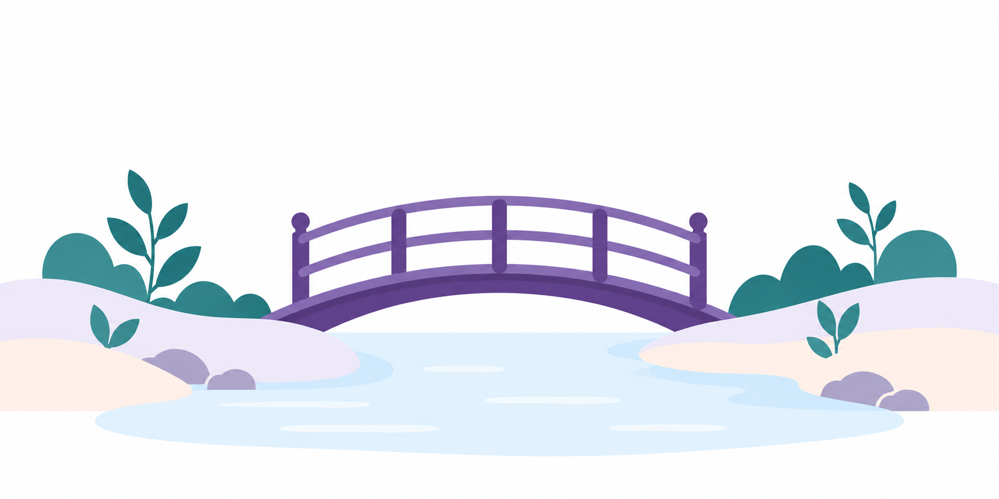
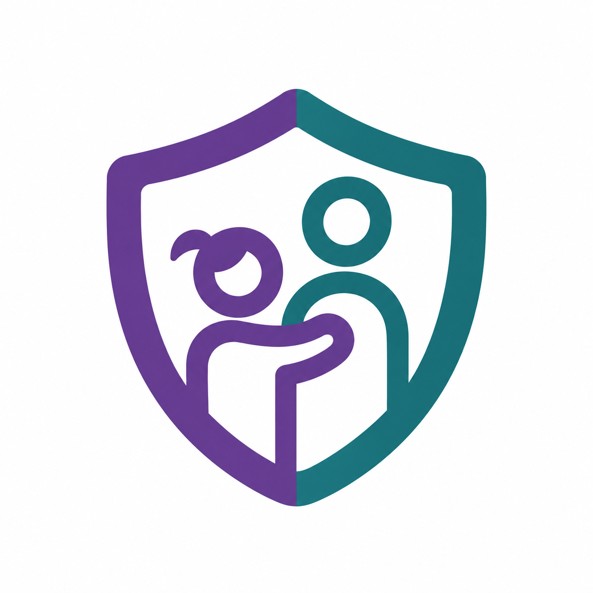
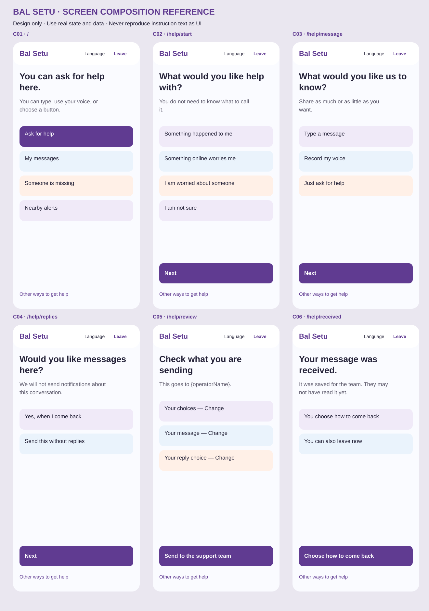
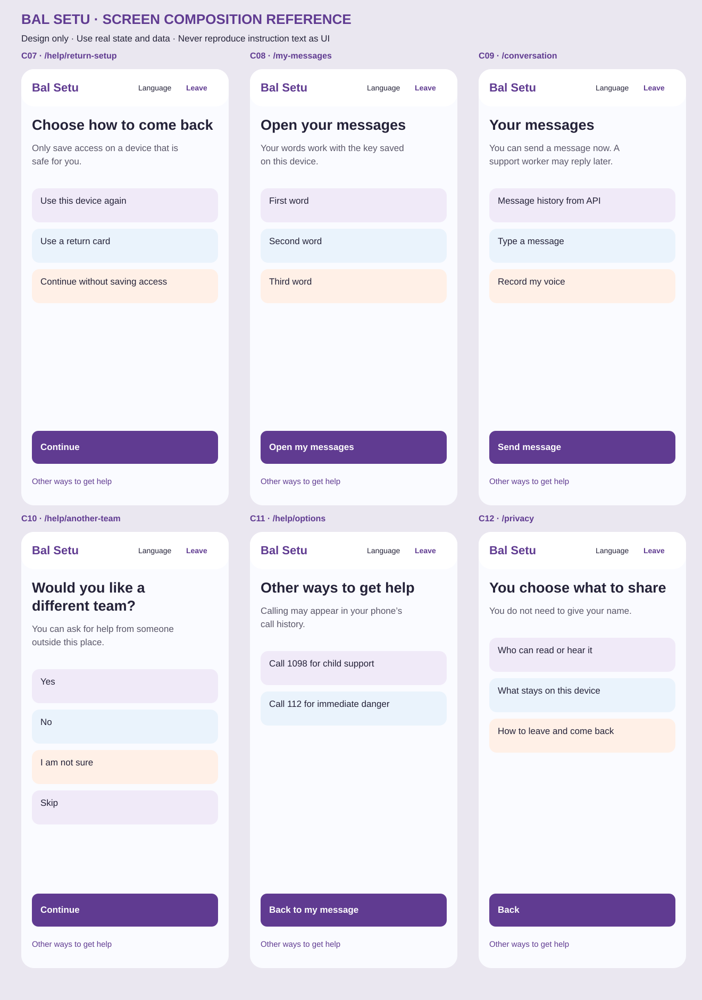
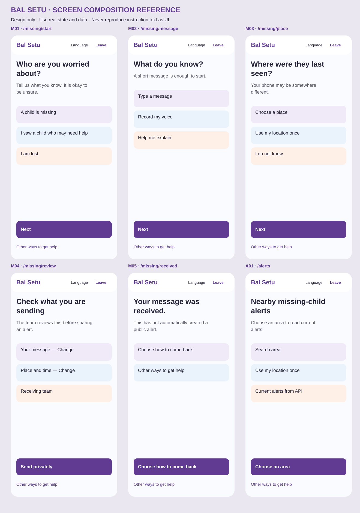
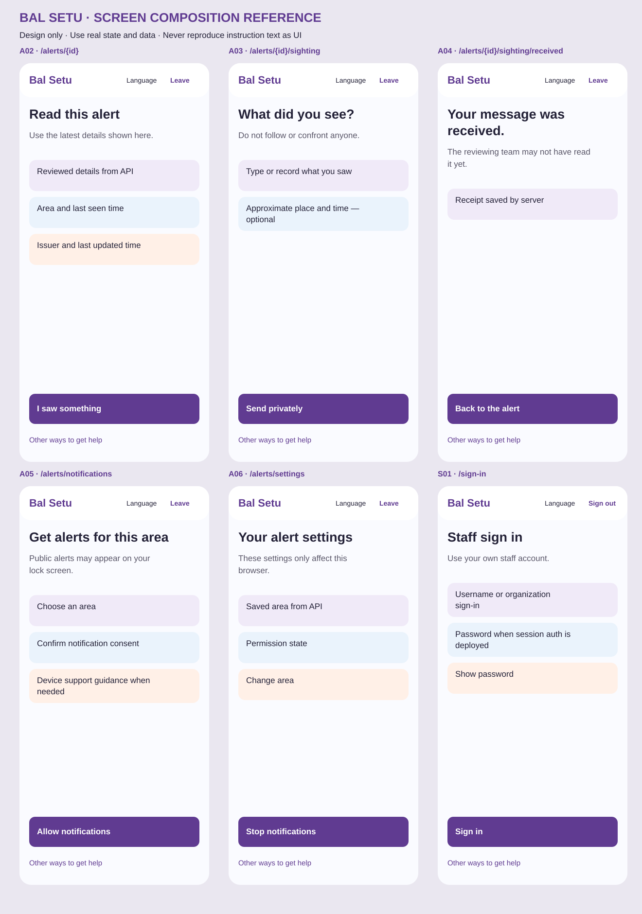
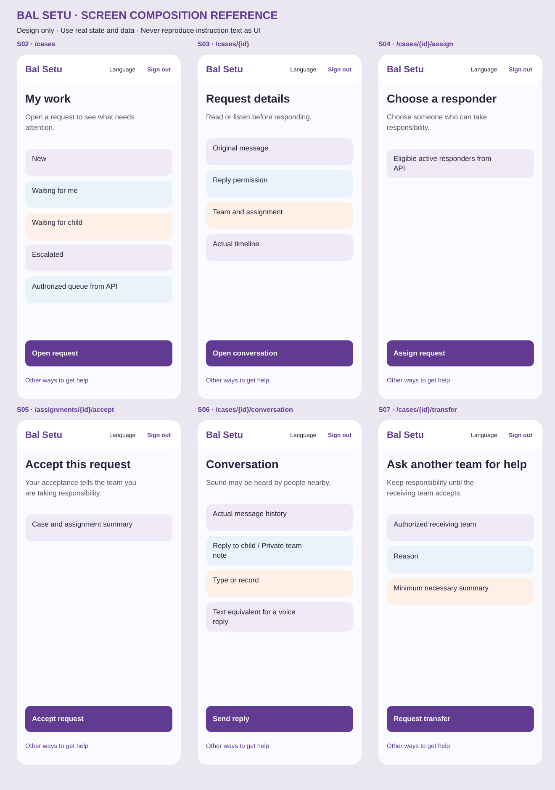
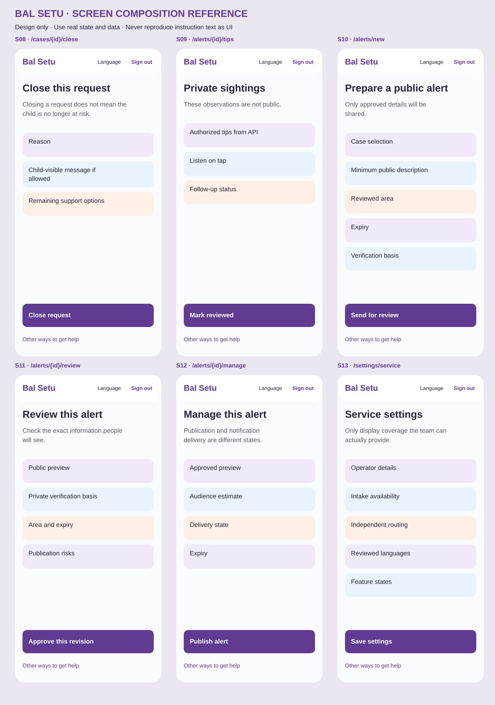
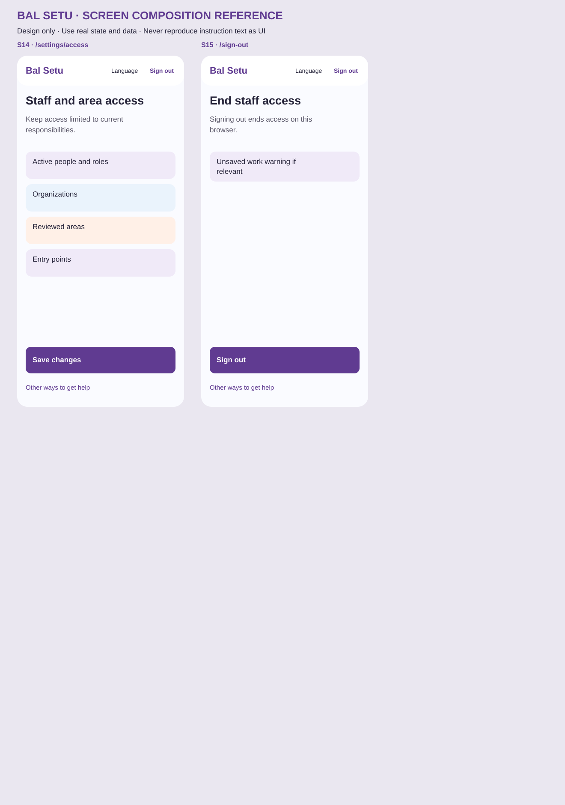

Bal Setu · implementation resources
Design reference only. These are not working application screens.

Optional welcoming illustration; no essential information.
App-icon master derived from the supplied logo.Interface and word-picture icons
help
messages
missing
alerts
microphone
play
pause
stop
listen
location
back
next
exit
language
check
retry
close
privacy
edit
send
person
clock
share
bridge
boat
cloud
mango
leaf
moon
star
tree
book
cup
kite
ball
fish
All screen compositions

Board 1; see screens.json and screens/*.md for full behaviour.
Board 2; see screens.json and screens/*.md for full behaviour.
Board 3; see screens.json and screens/*.md for full behaviour.
Board 4; see screens.json and screens/*.md for full behaviour.
Board 5; see screens.json and screens/*.md for full behaviour.
Board 6; see screens.json and screens/*.md for full behaviour.
Board 7; see screens.json and screens/*.md for full behaviour.